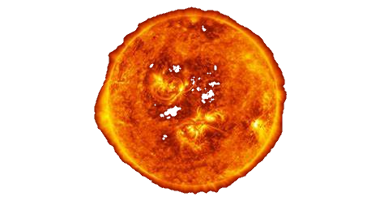

Volver
|  |
DefiniciónEl Sol es la única estrella de nuestro sistema solar. Su influencia y gravedad mantiene unido todo lo que gira alrededor de él, y su luz, calor y energía son el motor que propicia la vida en la Tierra. En este artículo te contamos todo lo que deberías conocer sobre el Sol. El Sol, nuestra estrella, se sitúa en el centro del sistema solar y rige todo lo que sucede en su interior. Por ello, no es de extrañar que decenas de culturas a lo largo y ancho de nuestro planeta y durante el transcurso de los siglos, hallan considerado al Sol como una divinidad a la que se le ha reservado un lugar especial. Así, para los griegos Helios fue el hijo de los titanes Hiperión y Gea, personificación del Sol, y Ra fue el dios del cielo, dios del Sol y del origen de la vida para los egipcios. Utu, por su parte, era para los sumerios el dios del Sol a la par que de la justicia, al cual los Incas conocían como Inti, su deidad más importante y padre del emperador. Su nombre actual, Sol, procede del término latino "solis", el cual alude a la deidad romana solis invictus o sol invicto, cuyo culto religioso se remonta al Imperio Romano tardío. ¿Qué tipo de estrella es el Sol?El Sol es una estrella de tipo espectral G2 y luminosidad V, es decir, una estrella G2V. Esta no es otra cosa que la forma rápida y abreviada que tienen los astrónomos para referirse a las estrellas enanas amarillas que poseen entre 0,8 y 1,2 masas solares. Tiene una edad aproximada de 4.500 millones de años y se encuentra a unos 150 millones de kilómetros de nuestro planeta. El Sol está ubicado uno de los brazos espirales secundarios de la Vía Láctea, el brazo de Sagitario, en un espolón conocido como brazo de Orión. La estrella gira sobre su eje con una inclinación de 7,25º con respecto a su orbita alrededor del Sol, sobre la que se desplaza a una velocidad de 720.000 kilómetros por hora. ¿Cómo se formó el Sol?El Sol se formó hace 4.650 millones de años aproximadamente a partir grandes nubes moleculares de gas y polvo dejadas por generaciones anteriores de estrellas. Dentro de dicha nube, los materiales comenzaron a agregarse por gravedad, formando lo que los científicos conocen como una protoestrella, que continuó atrayendo a su vez a más materiales y generando una gravedad mayor en una especie de circulo virtuoso. Una vez alcanzada una masa crítica de material, se produjo en el interior del Sol el "chispazo" que encendió la estrella, es decir, el comienzo de las reacciones nucleares en cadena que proporcionan su energía a la estrella. En la actualidad, se piensa que el Sol se encuentra aproximadamente en la mitad de su vida. De hecho, los científicos sabes que el Sol correrá la misma suerte que otras estrellas de su tipo y que dentro de otros 5.000 millones de años agotará su combustible y se transformará en un anillo brillante de gas y de polvo interestelar, lo que se conoce como una nebulosa planetaria, uno de los objetos más bellos del Universo. Estructura del SolCon un diámetro de 1,4 millones de kilómetros, el Sol es el objeto más grande de nuestro sistema solar. Para hacernos una idea, el Sol es tan grande que cabrían hasta 109 planetas Tierra en fila a lo largo de la línea de su ecuador, o lo que es más impresionante aún, si el Sol fuera una esfera hueca en su interior cabrían más de 1.300.000 planetas como el nuestro. Como no podía ser de otra manera, el Sol también es el objeto más masivo de nuestro sistema solar. De hecho, el Sol posee el 99,8% de la masa de todo el sistema solar. Otra increíble comparación con nuestro planeta es que para igualar la masa del Sol, harían falta unas 330.000 Tierras. Pese a ello, no obstante, en términos de tamaño el Sol es una estrella del motón ya que se han encontrado en el Universo estrellas que pueden alcanzar hasta 100 veces su tamaño. El Sol, al igual que otras estrellas de su tipo, es una enorme esfera compuesta principalmente por hidrógeno y helio. Respecto a su estructura, en su interior se diferencian 3 regiones: un núcleo, la zona radiativa y la zona de convección. De entre ellas el núcleo es la parte más caliente del Sol. La temperatura en el núcleo del Sol es de aproximadamente 15 millones de grados centígrados, lo suficientemente caliente para que en su interior se produzca un proceso continuo de fusión nuclear. Esto crea una presión expansiva hacia el exterior que soporta la gigantesca masa de la estrella, es decir, que contrarresta la enorme gravedad del Sol evitando que colapse, por lo que decimos que el sol, al igual que otras estrellas se encuentra en equilibrio hidrostático. Una vez generada la energía en el núcleo, es transportada al exterior por la llamada zona de radiación. Esta zona está compuesta principalmente de plasma, es decir, grandes cantidades de hidrógeno y helio ionizado. Esta energía en forma de calor puede tardar hasta 170.00 años en alcanzar la zona de convección, la capa más externa del sol donde los gases dejan de estar ionizados y la temperatura se aproxima a los 2 millones de grados centígrados. Desde aquí, los gases se moverán hacia la fotosfera, que es lo que los científicos consideran la superficie del Sol. La fotosfera es la parte del Sol que podemos observar desde la Tierra. Su nombre, fotosfera, significa literalmente "esfera de luz" por ser la capa que emite la luz visible. Atmósfera del SolCon un espesor de 400 kilómetros y una temperatura media de 5.500 ºC, aunque es considerada la superficie del Sol, la fotosfera es en realidad la primera capa de la atmósfera solar. De dentro hacia afuera, la fotosfera se encuentra inmediatamente seguida por la cromosfera, una capa de unos 10.000 kilómetros de espesor y por la llamada zona de transición, una capa delgada de la atmósfera solar donde la cromosfera se calienta súbitamente para convertirse en la corona solar, la capa más exterior de nuestra estrella. Una vez que el material sale de la corona a velocidades supersónicas, se convierte en viento solar, que forma una enorme "burbuja" magnética alrededor del Sol, llamada heliosfera. La heliosfera se extiende más allá de la órbita de los planetas de nuestro sistema solar. Por lo tanto, podemos decir que la Tierra existe dentro de la atmósfera del Sol. Fuera de la heliosfera se encuentra el espacio interestelar. Curiosidades sobre el Sol
|
Fuente: National Geographic
Volver